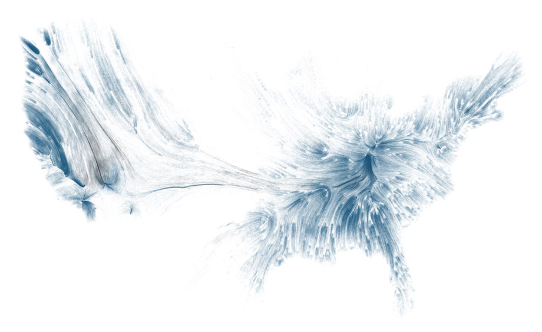
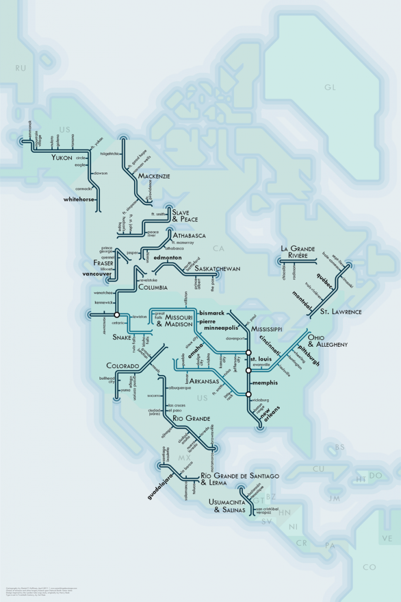
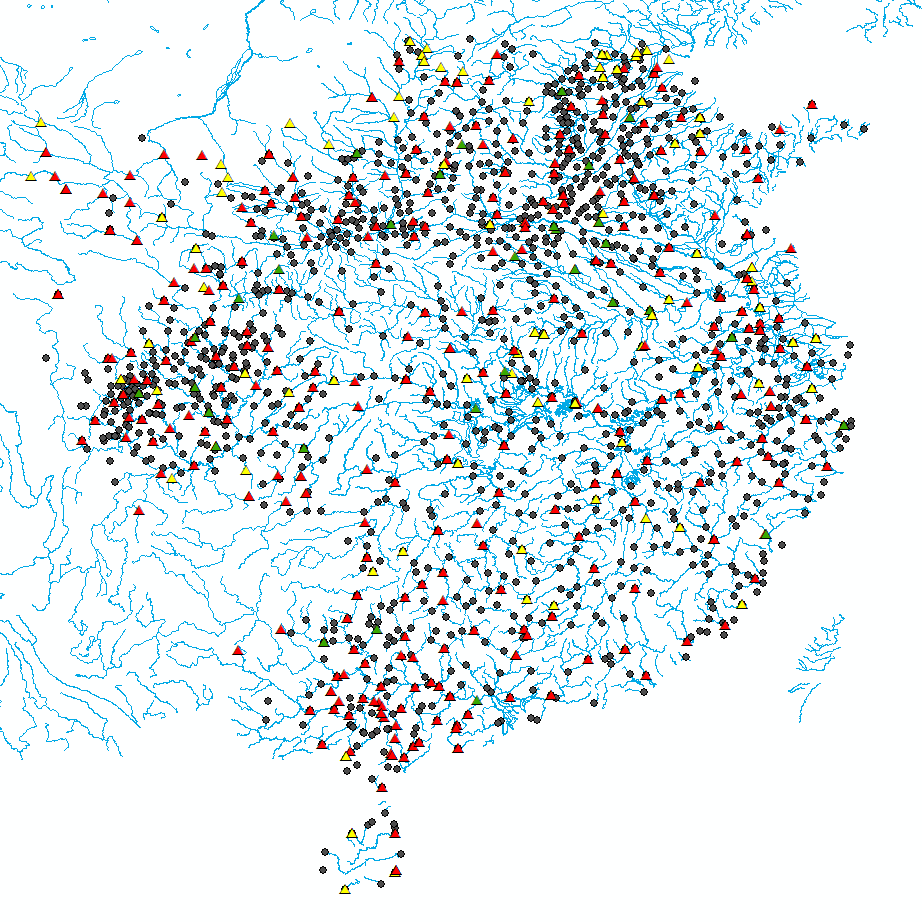

I was lucky enough to be asked to take part in a data visualization workshop at the Exploratorium this Saturday and, as part of the amazing collection of inspirational material submitted by the participants, I saw this piece. A work by David Wicks, “Drawing Water” is probably one of the most beautiful representations of an environmental system that I’ve ever seen.

This isn’t the first time I’ve seen creative representations of the water systems of the United States, and immediately thought of Daniel Huffman’s “River Maps”:

It also made me think of my own use of the rivers of China as a backdrop for representation of historical GIS data. I feel rather silly including this alongside the actual pieces of art above, but perhaps it will give hope to the less artistically skilled to still integrate these beautiful concepts into more utilitarian work.
